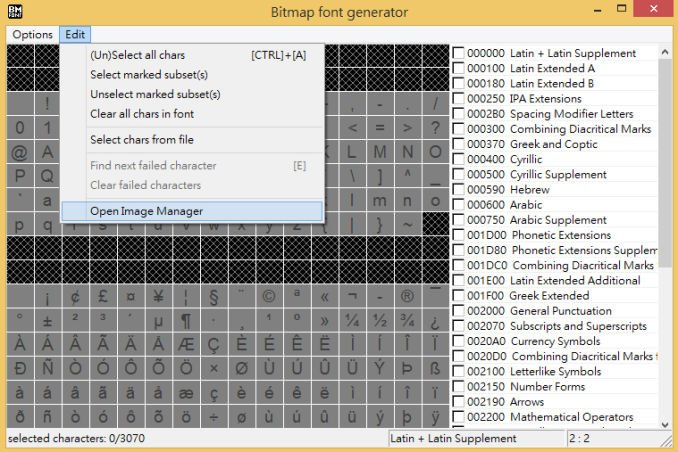
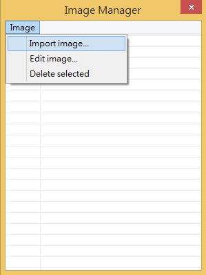
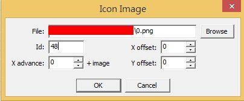
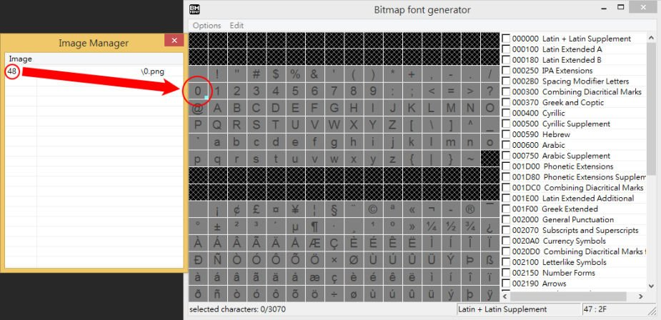
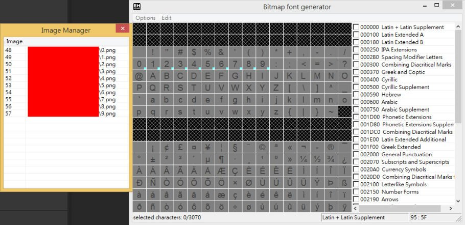
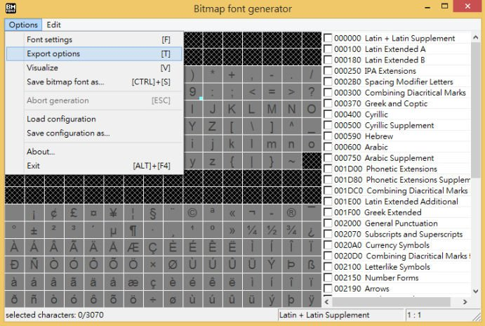
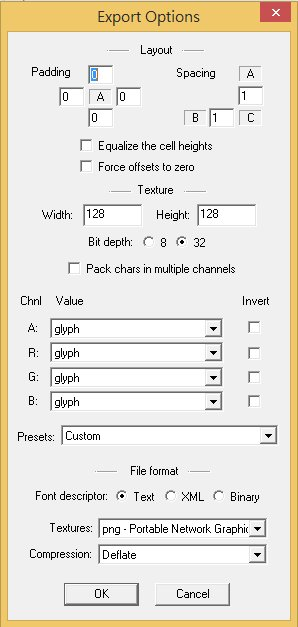
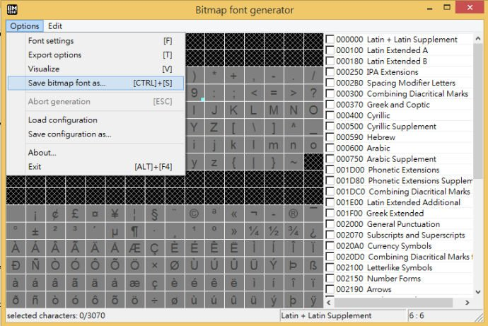
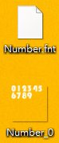

上一篇建立出了第一個文字標記
但看起來相當陽春
在遊戲中往往都會用更加華麗的文字來當作預設字型
這篇教學中會使用到 BMFont 這個工具
載點：http://www.angelcode.com/products/bmfont/
安裝好 BMFont 以後將它打開
開始進行自定義字體圖集建立
點選 Edit → Open ImageManager

點選 Image → Importimage…

將預定使用的圖片導入 ( 這裡示範用的是數字0~9 )

在 Icon Image 裡的 Id 對應的是 BMFont 表單裡的位置
Id：48對應的是數字0的位置
已對應的位置右下角會有藍色小方塊

將數字0~9全部導入後

回到主選單進行導出設定
點選 Option → Exportoptions

調整 Bit depth 為32
調整導出圖片的大小 ( 示範用設定為128×128)
調整導出圖片格式 ( PNG )

回到主選單
點選 Options → Sava bitmapfont as…
進行儲存

儲存成功後會產生兩個檔案
一個 .png 及一個 .fnt
